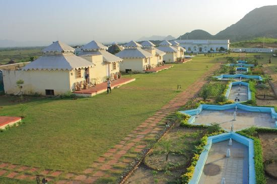
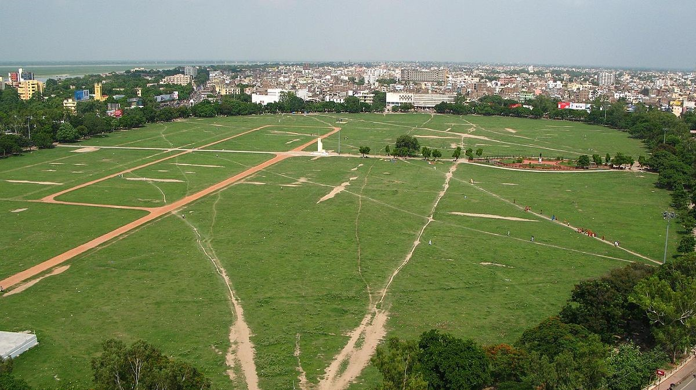
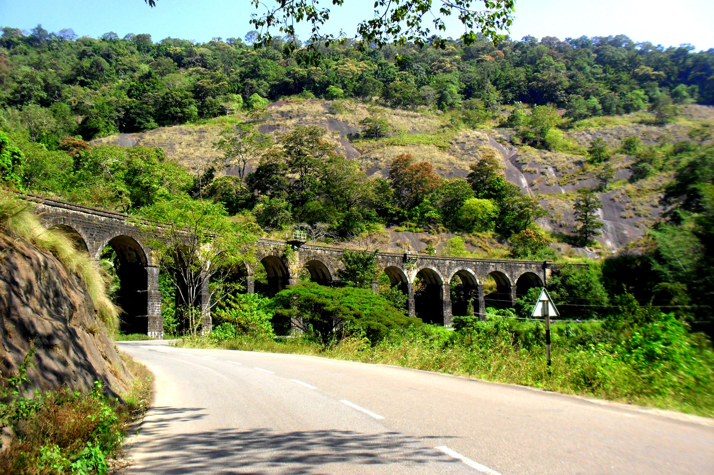

Kollam district (formerly Quilon) is one of 14 districts of the state of Kerala, India. The district has a cross-section of Kerala's natural attributes; it is endowed with a long coastline, a major Laccadive Sea seaport and an inland lake (Ashtamudi Lake). The district has many water bodies. Kallada River is one among them, and the east side land of river is East Kallada and the west side land is West Kallada. Kollam zone of KSRTC is now the second most revenue generating zone in Kerala.
How to Reach
The district is connected to other parts of Kerala and India through the National Highways – NH 66 (earlier NH 47), NH 183 (earlier NH 220), NH 744 (earlier NH 208). The state highway - Main Central Road (MC Road) and Punalur-Pathanamthitta-Muvattupuzha Main Eastern Highway — connects Kollam with other districts. Intrastate road transportation is served by the KSRTC, Tamil Nadu State Transport and Karnataka State Transport Companies. KSRTC Interstate bus service operates from the Kollam and Kottarakkara KSRTC bus stations.
Places to Visit
Ashramam Tourist Village
Ashramam Tourist Village is a well-known tourist destination in Kollam city; the tourist village is located on the banks of Ashtamudi Lake.
Asramam Maidan
The Asramam Maidan (Ashramam ground), adjacent to the tourist village, is the largest open space within a Kerala municipal corporation. It is used for events, sports, as a helipad, for Kollam Pooram and by driving schools.
Thenmala
Thenmala, located 66 kilometres (41 mi) east of Kollam, is the first ecotourism project in India and run by the Thenmala Ecotourism Promotion Society.

Ashramam Tourist Village
Ashramam Tourist Village is a well-known tourist destination in Kollam city; the tourist village is located on the banks of Ashtamudi Lake.

Asramam Maidan
The Asramam Maidan (Ashramam ground), adjacent to the tourist village, is the largest open space within a Kerala municipal corporation. It is used for events, sports, as a helipad, for Kollam Pooram and by driving schools.

Thenmala
Thenmala, located 66 kilometres (41 mi) east of Kollam, is the first ecotourism project in India and run by the Thenmala Ecotourism Promotion Society.